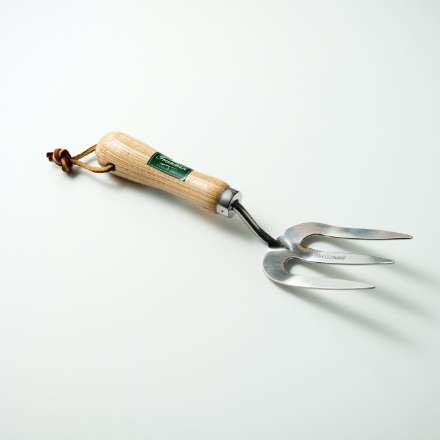
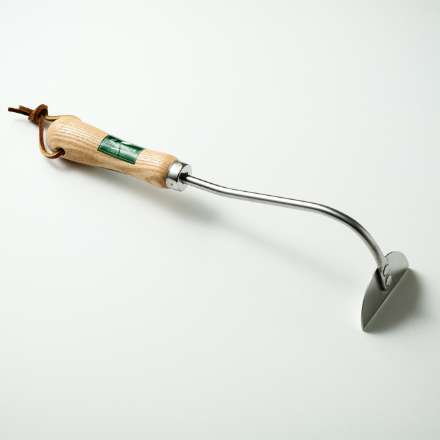
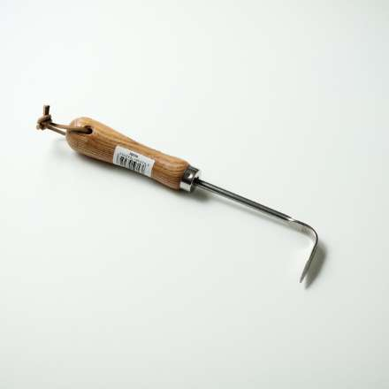
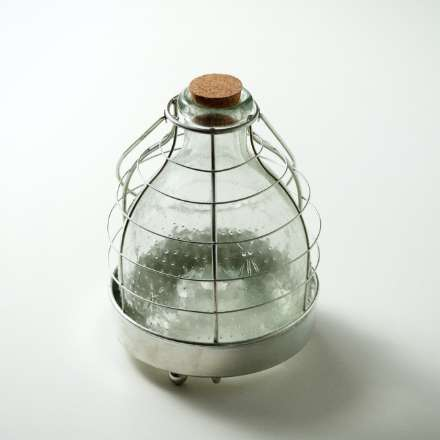
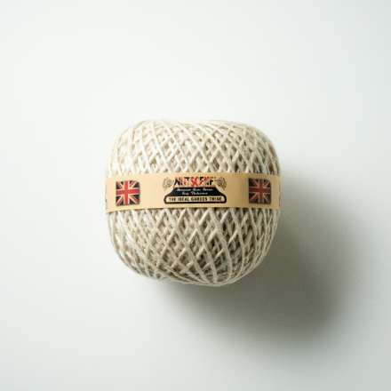
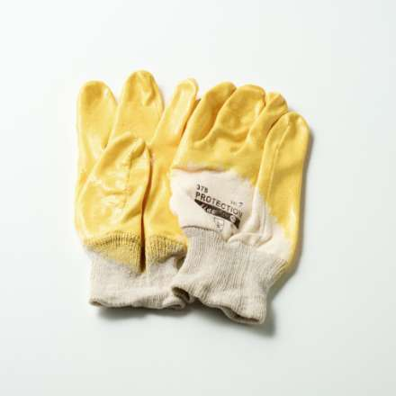
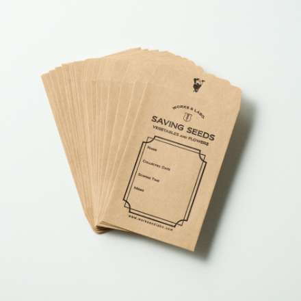
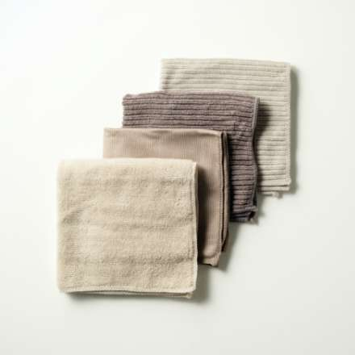

施工事例
Construction Case Study
施工事例一覧
-

- ハンドフォーク
- ガーデニングの必需品といえる、伝統的な形のハンドフォークです。
-

- オニオンホー
- 地面をならしたり土を起こしたり、さまざまな場面で活躍するツールです。
-

- 除草ピック
- レンガの目地などの細かい雑草を除去するのに最適な除草ピックです。
-

- ガーデン捕虫器
- 木の枝やガーデンに吊るして、害虫を捕獲します。底に果実などを入れて使います。
-

- 誘引麻ひも
- 家庭菜園に欠かせない誘引用の麻ひもです。多数のカラーをご用意しています。
-

- ラバーグローブ
- 表面がラバーコーティングされたグローブです。作業時の滑り止めや衝撃の緩和に。
-

- 種保存袋
- 採種した種を保存しておくための袋。使いやすいポチ袋サイズです。20枚入り。
-

- クロス
- 吸水性に優れたマイクロファイバー製。洗剤を使わず汚れをきれいに落とせます。